PRÁCTICA TERMINALES
GEMA BEATO 2º ASIR
ÍNDICE
MANUAL 1 4
MANUAL 2. 8
MANUAL 3. 11
MANUAL 1
Instalar un servidor SSH en Linux
- Crear usuarios que puedan acceder al equipo a través del ssh (adduser)
- Instalar el servidor ssh (Ubuntu, Knoppix)
- Probar con Putty desde Windows
- Y probar desde otro Linux con el comando ssh
1.b.- ¿Cómo se podría conectar un usuario sin tener que meter la contraseña cada vez que se conecta?
- Crear mi usuario en el servidor (Ubuntu Server):
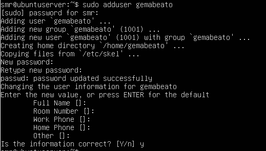
- Instalar ssh en el servidor (Ubuntu Server). Aquí podemos ver que está instalado y funcionando:
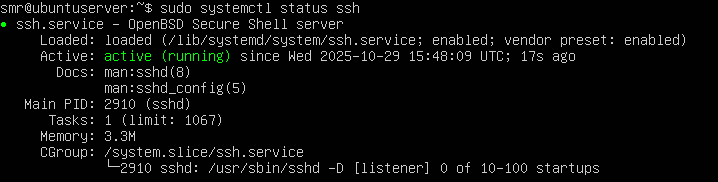
- Probamos a conectarnos desde el cliente Ubuntu al servidor ssh: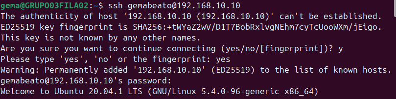
Vemos que nos hemos conectado bien:
- Probamos la conexión ssh desde el cliente Windows con Putty y vemos que funciona:
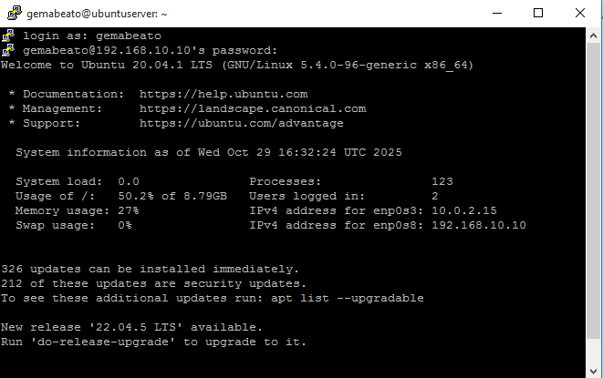
1.b En el cliente Ubuntu creo las claves
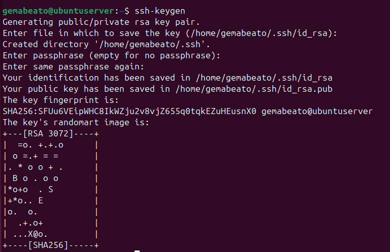
- Copiamos la clave pública al server:
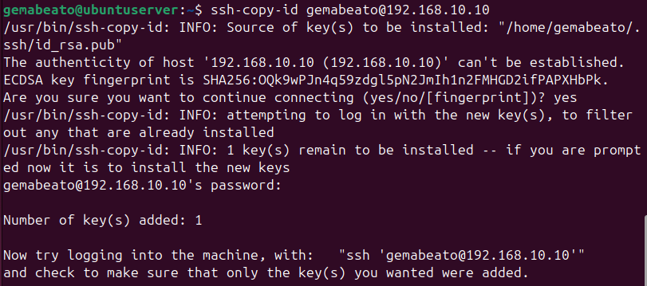
- Ahora si nos conectamos de nuevo, no nos pide contraseña:
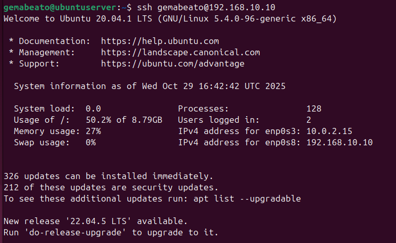
MANUAL 2.
Conexión de escritorio remoto en Windows (RDP)
Levantar el servicio RDP en windows
Conexión cliente RDP desde:
- Permitimos el acceso remoto en el Windows:
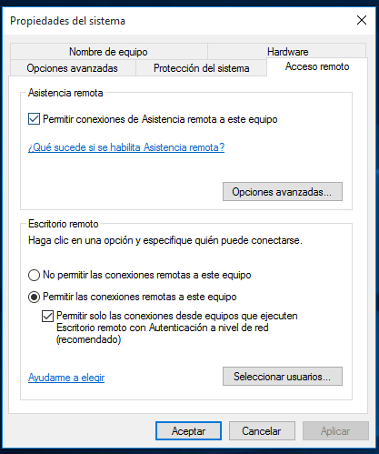
- Nos conectamos desde un Windows 10 (192.168.10.12) a otro Windows 10 (192.168.10.11).
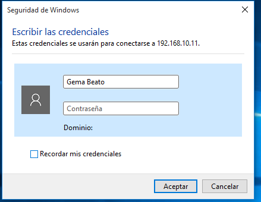
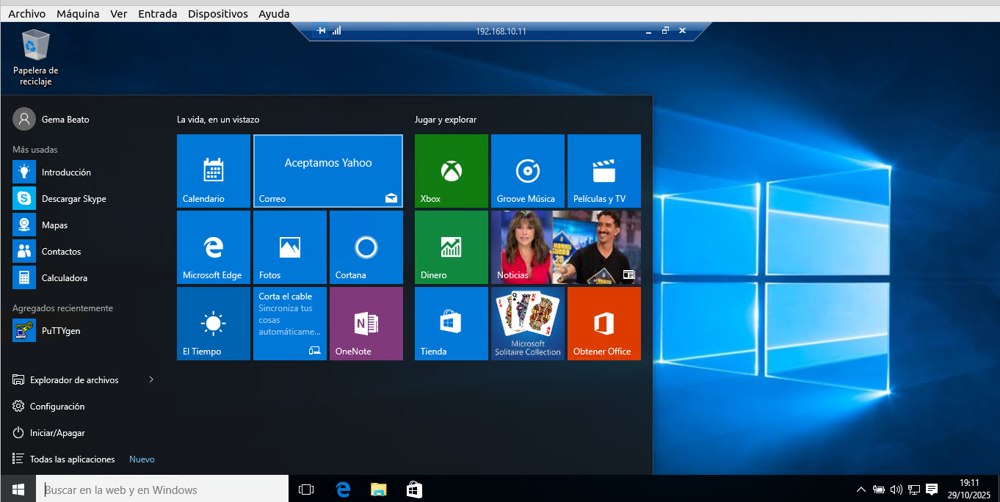
- Instalamos Remmina en Ubuntu. Nos conectamos desde Ubuntu con Remmina al Windows 10 (192.168.10.11).
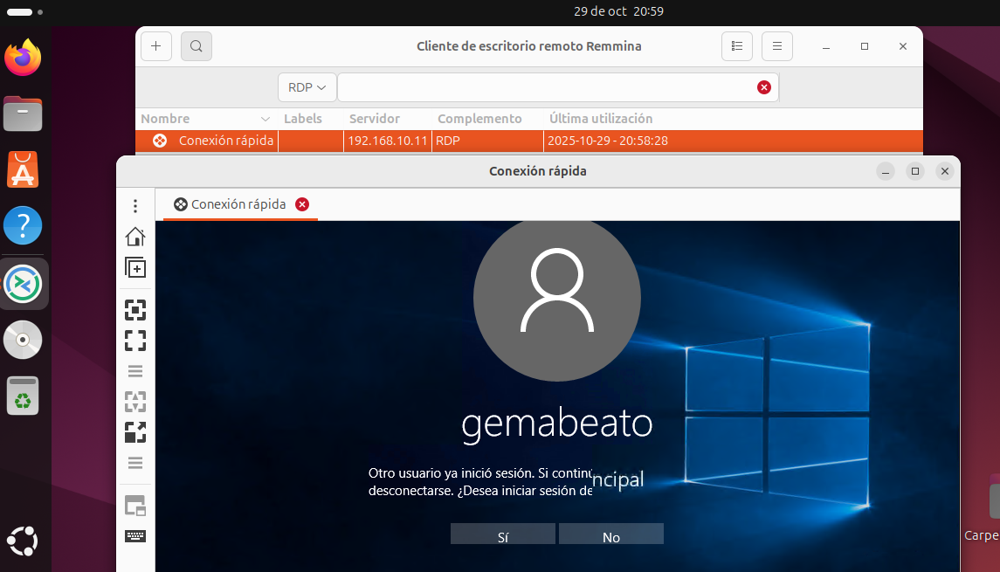
MANUAL 3.
Instalar un Teamviewer en equipo windows y en otro Linux
- conectar a administración remota desde:
- Otro equipo windows y desde otro LInux
- Desde móvil
- conectar en modo presentación y ver las opciones disponibles
- Otro equipo windows y desde otro LInux
- Desde móvil
- Instalamos Teamviewer en los dos Windows y en Ubuntu.
- Dentro de Teamviewer de Ubuntu, ponemos el id que nos ha dado el Teamviewer de Windows (192.168.10.11), y después nos pedirá la contraseña.
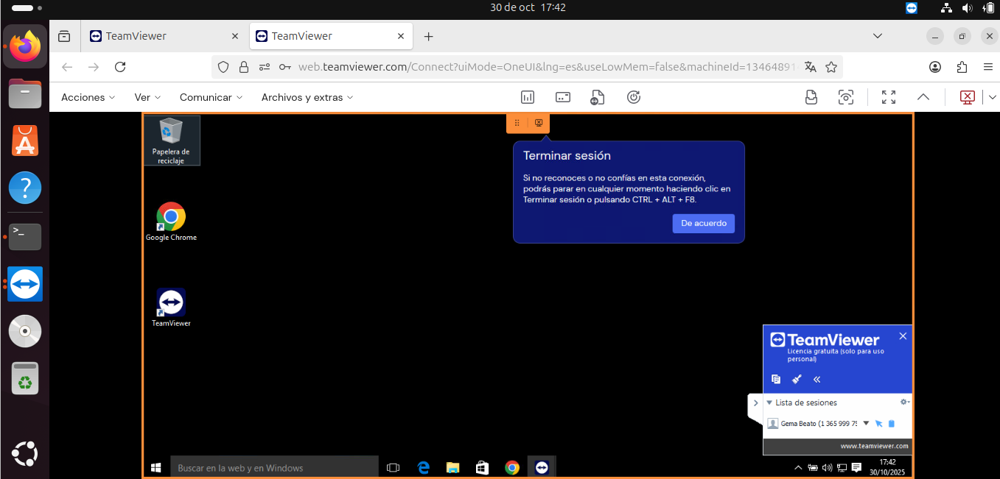
- Ahora nos conectaremos de la misma manera, desde un Windows 10 (192.168.10.12) a otro Windows 10 (192.168.10.11):
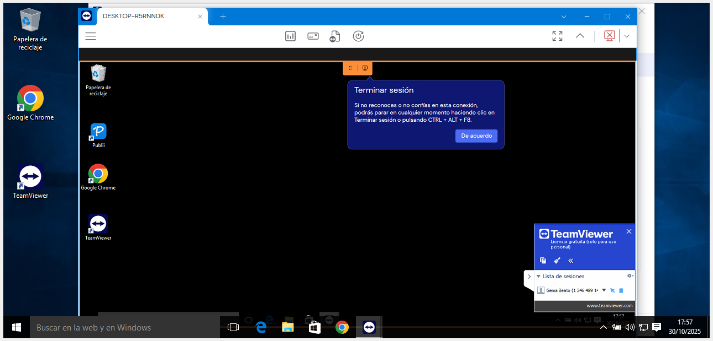
- Ahora vamos a hacerlo desde un móvil. 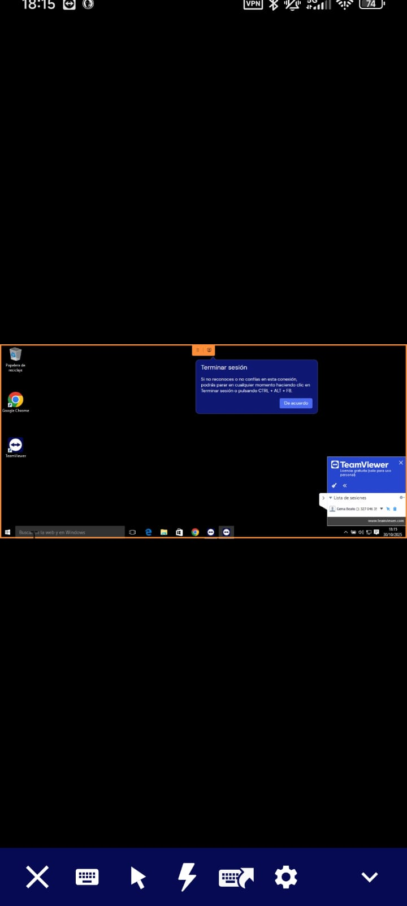
- Pulsando en este cursor, podremos poner la sesión en modo presentación, de tal manera que sólo el anfitrión puede mover el cursor.
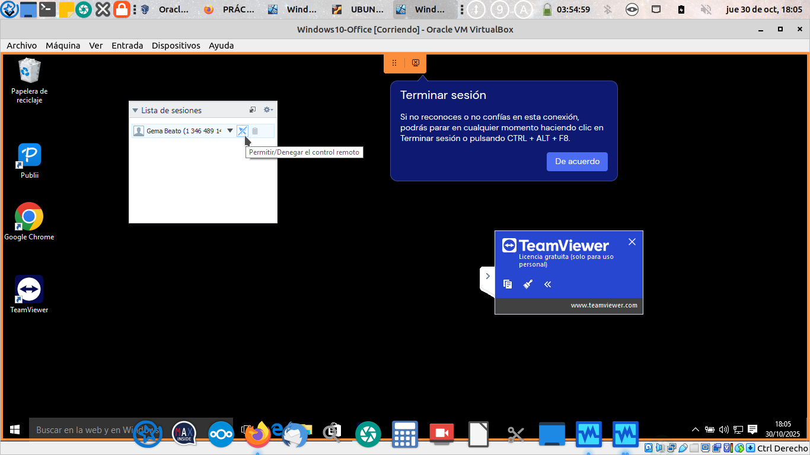